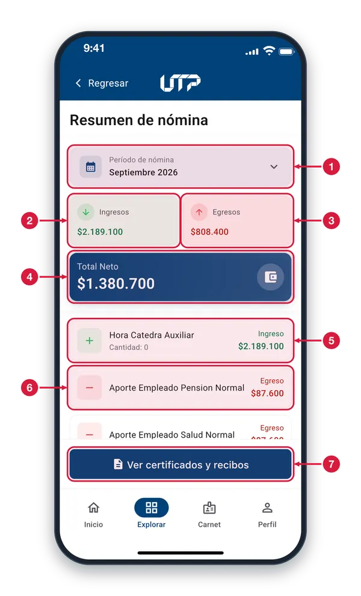
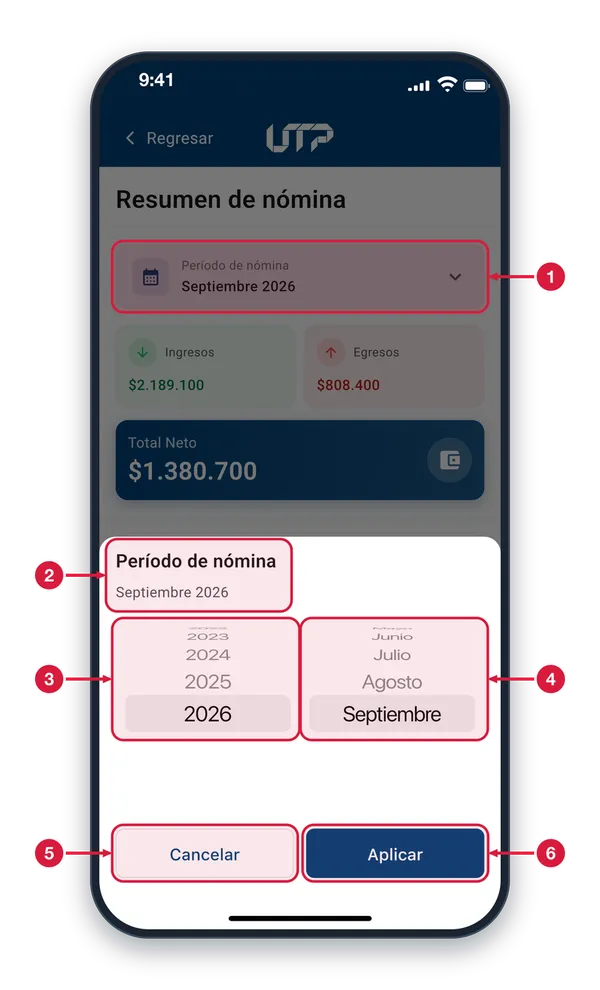
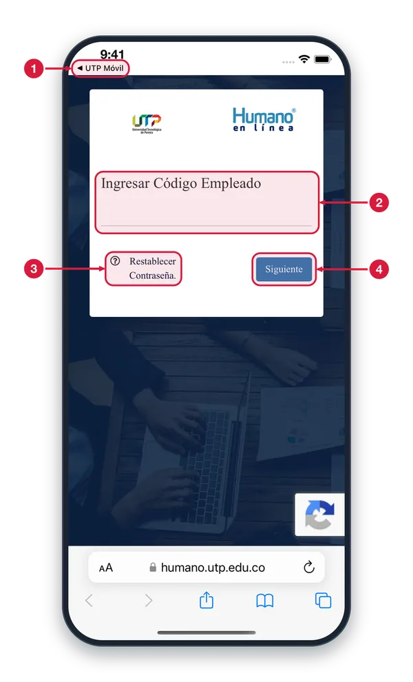

Módulo para docentes y administrativos (empleados): consulta el desprendible de nómina de cualquier mes con sus conceptos de ingreso (devengado) y egresos (deducciones).
Para buscar el resumen de nómina por mes y año:
Selección del año y el mes para consultar el desprendible
Desglose de conceptos de ingreso (devengado)
Desglose de deducciones y descuentos (egresos)
Total neto del periodo
Al tocar «Ver certificados y recibos» pasas al portal Humano en línea
Solo podrás ver y hacer uso del módulo NÓMINA cuando te loguees en la aplicación
Resumen de nómina1 de 3
Aquí ves tu desprendible de pago: lo que recibes, lo que se descuenta y el neto de cada mes. Entras desde Explorar.

Período de nómina Muestra el mes y el año que estás viendo; al abrir, es el mes anterior al actual. Tócalo para elegir otro período. Si un mes no tiene datos, verás «Sin movimientos».
Ingresos Suma de los conceptos de tipo Ingreso del período: lo que recibes.
Egresos Suma de los conceptos de tipo Egreso del período: lo que se te descuenta, como los aportes.
Total Neto Valor neto del período: lo que queda de tus ingresos después de los egresos, según la nómina.
Concepto de ingreso Cada fila es un concepto de tu nómina: nombre, cantidad (si aplica) e importe. El + verde y la etiqueta Ingreso indican que suma.
Concepto de egreso El − rojo y la etiqueta Egreso indican un descuento, como un aporte. Desplázate para ver los demás conceptos; las filas solo informan.
Ver certificados y recibos Abre el portal «Humano en línea» en el navegador del teléfono, donde consultas tus certificados y recibos. Es un sistema externo y pide tu código de empleado y contraseña.
Elegir el período de nómina2 de 3
Aparece al tocar el selector de período: eliges el año y el mes del desprendible que quieres ver.

Selector de período Al tocar esta tarjeta se abre la hoja inferior donde cambias el mes y el año del desprendible.
Período marcado Debajo del título se lee el mes y el año que tienes marcados; se actualiza mientras mueves las ruedas.
Rueda de años Desliza hacia arriba o hacia abajo para elegir el año; puedes ir hasta cinco años atrás. El año marcado queda sobre la franja gris.
Rueda de meses Desliza para elegir el mes. En el año en curso solo aparecen los meses ya terminados, porque el desprendible del mes actual todavía no existe.
Cancelar Cierra la hoja sin cambiar nada: sigues viendo el período que tenías.
Aplicar Confirma el mes y el año marcados, cierra la hoja y carga el desprendible de ese período en el Resumen de nómina.
Certificados en Humano en línea3 de 3
Se abre en el navegador del teléfono al tocar «Ver certificados y recibos». Es un portal externo a la app.

Volver a la app Toca «UTP Móvil», arriba a la izquierda, para regresar a la app cuando termines en el portal.
Código de empleado Escribe aquí tu código de empleado. El portal también te pide tu contraseña para entrar.
Restablecer contraseña Si no recuerdas tu contraseña de Humano en línea, toca aquí y sigue los pasos del portal para cambiarla.
Siguiente Después de escribir tu código de empleado, toca «Siguiente» para continuar con el ingreso al portal.